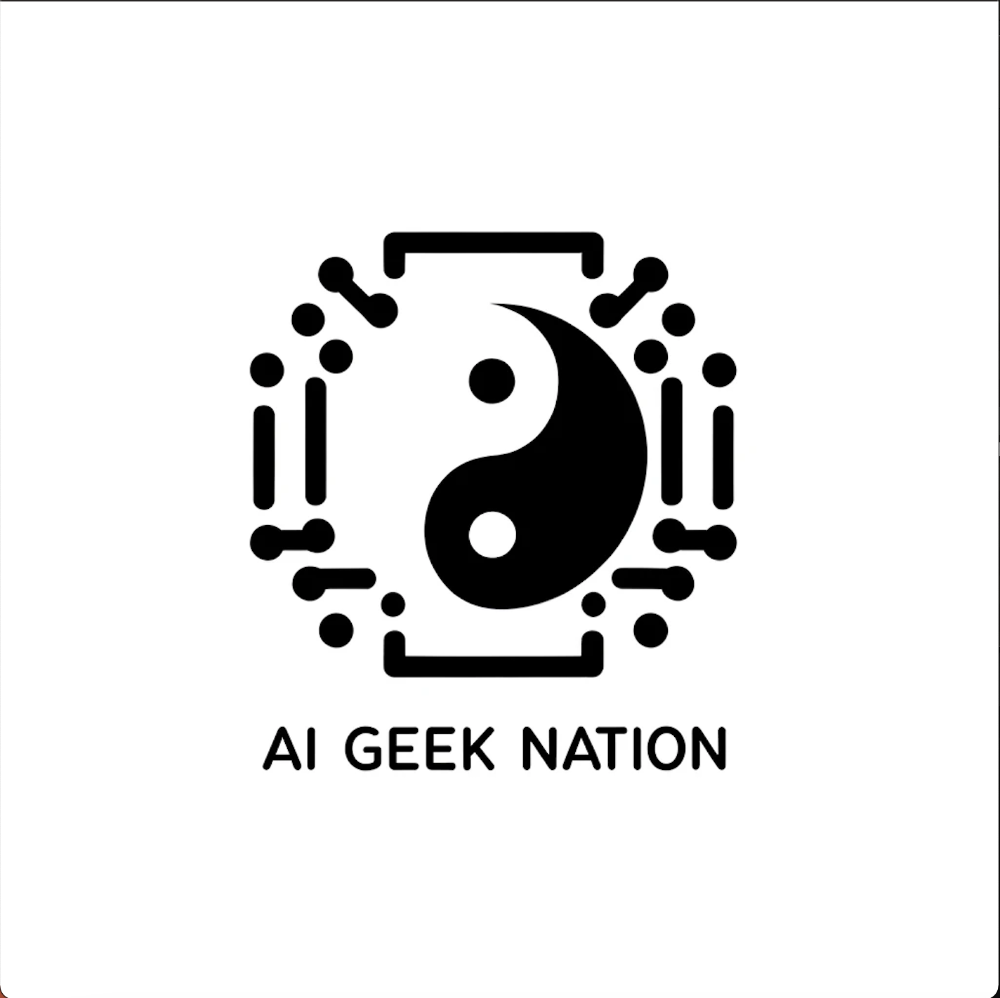

AIGC Development Engineer proficient in Python and TypeScript, with expertise in FastAPI, Docker, Next.js, PostgreSQL, and prompt engineering.
Project Experience focused on the AIGC field, successfully implemented multiple projects, improving business efficiency by over 30% and optimizing text generation and knowledge base construction.
Technical Skills familiar with RAG technology, model fine-tuning, and AI agent development, driving the implementation of intelligent dialogue and drawing features, significantly enhancing user experience.
Leadership and Management skilled in system architecture design and team management, with extensive project implementation experience.
Twitter @Aring
CSDN @Aring88
Telegram @Aring
Email rongye.liu88@gmail.com